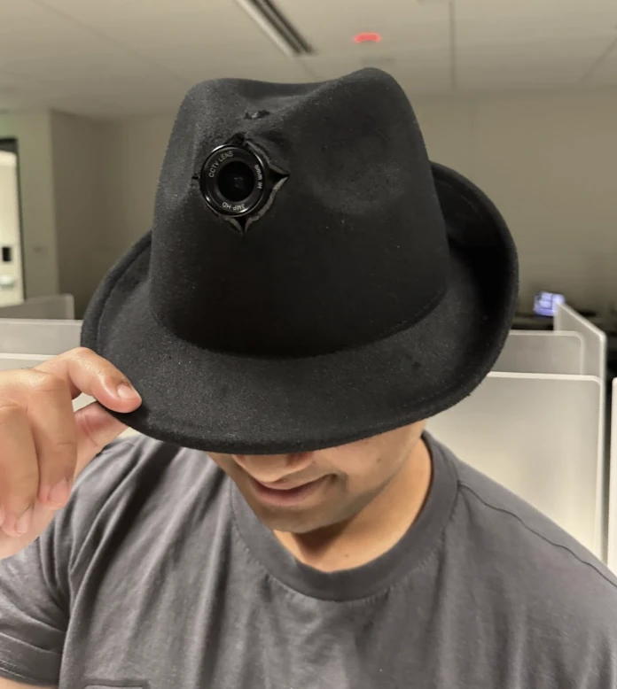

Personnel fileNo. 01

The Hat
- Alias
- The hub
- Role
- Walks the room. Looks, prices, keeps the ledger and runs the projector.
- Equipment
- A camera on the brim, a reveal button, and a direct line to dispatch.
- Habits
- Says a find out loud when it makes the top five.
Known associate